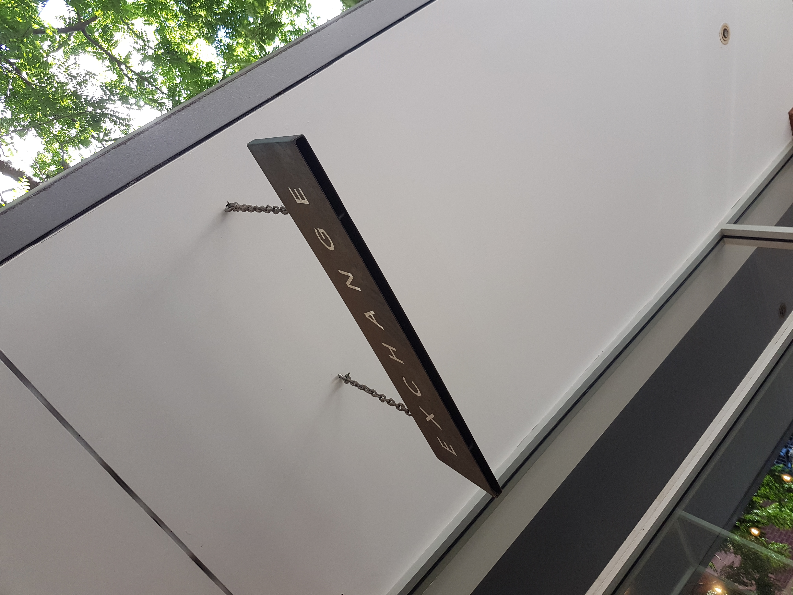
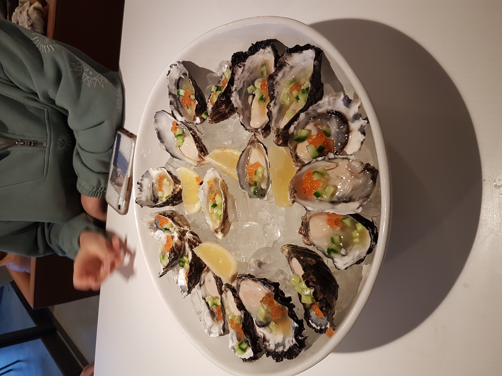
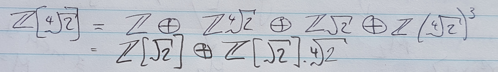

amateur food critic's world tour

Espresso

Wine

Food
by Flynn Stallworthy
Enjoy a snapshot into the reading, riding, eating, learning side of my life!
Enjoy the following events I have participated in recently!

At 6:30am under dim torchlight on the Saturday morning of July 18, Angus Grant (as seen watching me rant) and I began our first ultra-marathon event. At 8:45am on Sunday, we ran under the inflatable Elephant for the last time, successfully completing our (personally) portentous 26 hour exertion.
This event was the Elephant Trail race in Port Macquarie. It consisted in four laps of a 27km course, accumulating over 6000m of elevation throughout.


2021 will be my fourth year studying at the University of NSW, completing the requirements for the Advanced Mathematics (Honours), majoring in Pure Mathematics, degree.
Complementing my study of Math, I have undertaken classes in Computer Science and public speaking. I value these courses out of the scope of the Math degree as a source of personal growth and interest.
My thesis will be in the field of Combinatorics, focussing on the Second Neighbourhood Conjecture. Throughout this year, I am working with the supervision from the enthusiastic Dr Thomas Britz.
Majoring in Pure Mathematics, as one would expect, requires the study of a range of subjects in the vast field. This year, the work on my thesis will be accompanied with the following subjects taught by the School of Mathematics:
Outside of the subjects in Pure Mathematics, I have particularly enjoyed my study of the following classes heretofore:
As mentioned (many times) before, I am a passionate programmer, with an interest in the efficiency, optimization of algorithms and networking.
Throughout my degree, I have chosen to undertake many Computer Science subjects. Some of the most fulfilling and interesting subjects are listed below:
My intellectual growth extends beyond these two areas of focus: exploring my curiosity for effective communication and presentation, learning about the terroir of my favourite vineyards, and pursuing the perfect coffee.
Reading the published work of psychiatrist Eric Berne, analysing the methods of storytelling used by my favourite authors, and actively participating and reflecting on my own conversations help me understand the foundations of effective (and destructive) communication.
Regarding wine, referring to the books of Jancis Robinson, enjoying documentaries on the industry, vineyard websites, and plenty of conversations expand my knowledge on the subject.
Finally, with my barista's certificate - acknowledging me as a professional amateur hehe - I start every morning brewing espresso and piccolo's to enjoy, whilst (quietly) perfecting my art.
As an armchair philosopher, my reading journey began by voraciously engaging with the works of Friedrich Nietzche. Since those beginnings, I have found that I am fond of the lessons and experiences within the classic novels, but in particular the Russian classics. Every time I adventure into some other fiction, I enjoy the journey, but am pleasantly surprised when I return to the wealth found with Dostoyevsky or Nietzche.
Constantly referenced as the inspiration for many of the works of Dostoyevsky and Bulgagov, it was only a matter of time before I read this corner stone of Russian literature. The story walks through the misadventures of a Russian con-man. Written with a very casual tone, Gogol explores the timeless personalities of his characters: people we are familiar with and would meet in our own misadventures.
This mighty tome, the punchline for too many jokes, is often known and rarely read. After enjoying much of the writing of Dostoyevsky, I knew I was lacking a breadth of knowledge about Russian authors without enjoying the complementary writing of Tolstoy. This is a grand story, which has been magniloquently written. 650 pages in, I have been enjoying this extensive story and am about to begin the essay's Tolstoy included in this work (updates to come!!).
This is the final major work from Dostoyevsky remaining for me. Following this, it will no longer be immoral of me to return to his other works without feeling guilty!

I hope you have enjoyed learning a bit about myself and my interests!
If you want to reach out to me about work or to discuss anything that's caught your interest, I would love to hear from you. Below are links to my E-mail, Strava (in case you want to steal my KOM), and LinkedIn profiles.